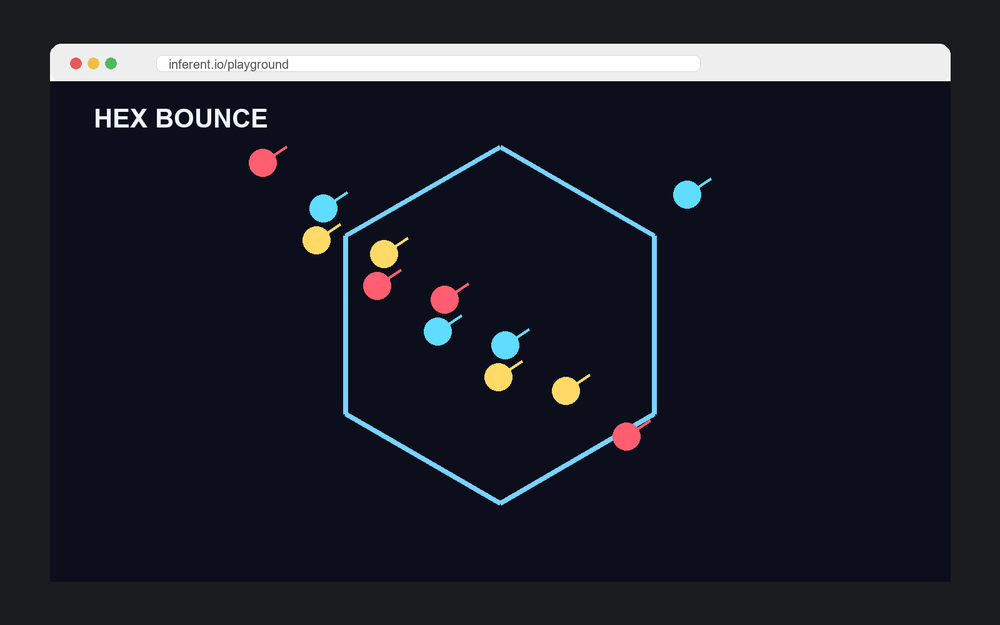

Tiny games. Real loops.
These are end-to-end browser games and one research-grade WebXR apparatus drawn from the Agentic XR Workflow sister project. Each one shows what a tight learning loop, a clear mechanic, or a single state machine looks like once it ships — the same primitives you build across Sessions 03–12.

Virtual Makerspace
A research-grade WebXR breadboard with grabbable parts and circuit evaluation — embodied Productive Failure at study scale.
Connects to · Session 12. Same shape as your D5 implementation spec — state machine, event map, and a Three.js bridge — but instrumented for a real classroom study.

Asteroid Game
2D dogfighting against AI ships and asteroid debris — a single-verb arcade loop done well.
Connects to · Session 03. Procedural-fluency on the crosswalk: one verb, escalating pressure, a gate that earns the next round.

Escape the Maze
Randomly generated maze, timer, replay button — a complete loop with a real fail-and-retry rhythm.
Connects to · Session 08. Minimum-viable state machine: start → run → win/lose → reset. Notice how the reset is what makes the loop teach.

Falling Fruit Catcher
Move a basket left/right; catch fruit; difficulty rises. The smallest loop that still keeps a player honest.
Connects to · Session 06. “Five-minute paper loop” benchmark — the kind of thing you should be able to playtest in your D3.

Solar System Explorer
Navigate planetary scale and orbital relationships in a single 3D scene.
Connects to · Session 03. Conceptual reasoning under lawful constraint — model is right or wrong, not opinion-based.

Ocean Wave Simulation
Live wind-speed and height sliders; watch wave shape change in real time.
Connects to · Session 03. Prediction-then-test sandbox: change one parameter, observe, refine the mental model.

Hex Bounce
Glowing balls ricochet inside a slowly rotating hexagon — a pure physics sandbox with one tunable.
Connects to · Session 04. “What makes a loop sing” — minimum mechanic, maximum readability.

Festival Lights
An interactive light performance — pure expression, no win condition.
Connects to · Session 04. The non-game end of the spectrum — useful to mark where “loop” ends and “toy” begins.